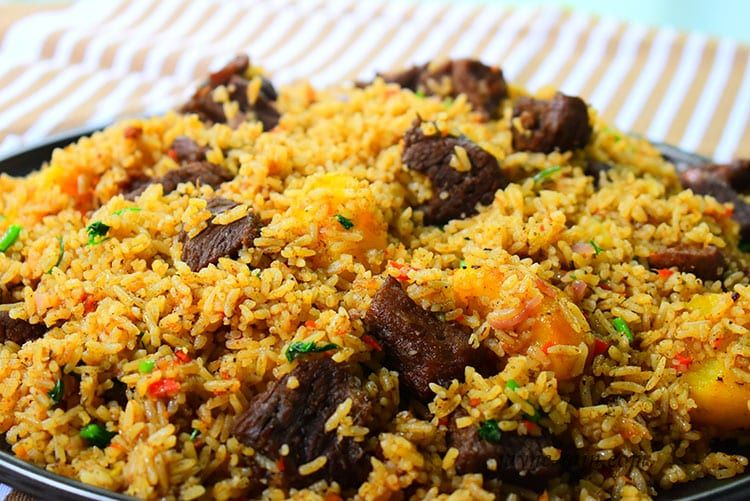

Rice recipe

Description
East African Pilau is a traditional, beautiful fragrant rice dish made with
many aromatic spices that adds an amazing depth of flavor to the rice.
It can be made with either beef or chicken.
Pilau has a wonderful balance of flavors. It is a festive dish, which is never missing during special
occasions or events. It’s made with rice cooked in a well-seasoned broth of Meat or chicken.
Unlike the Indian pilau, the East African version does not use curry and it’s less spicy.
Rice is, without a doubt, one of my favorite food in the world. Not only is it my to-go dish
when I need to prepare a quick meal, but it can easily be turned into an
elegant dish for special occasions.
Ingredients
- ½ tsp coriander seeds
- 6 cardamom pods
- 1 tsp cumin seeds
- 8 cloves
- 1 cinnamon stick
- 2 bay leaves
- 75g/2½oz butter
- 1 small onion, finely chopped
- 1 garlic clove, finely chopped
- ½ tsp ground turmeric
- ½ tsp black mustard seeds
- 300g/10½oz basmati rice, rinsed and drained
- 500ml/18fl oz chicken or vegetable stock, fresh or made from 1 stock cube
- sea salt and freshly ground black pepper
Steps
- Toast and blend the pilau masala: In a medium saucepan over medium heat.
- Brown the onions by frying it in oil until it caramelizes. This should take about 10 to 15 minutes. Stir in the Garlic, ginger and serrano pepper.
- Add the meat stock cubes, pilau masala, cilantro, bay leaves, and salt to taste and brown the meat for about Stir in the tomatoes and cook till it dissolves. Then stir in the potatoes.
-
Add water and bring everything to a rolling boil and leave the potatoes to cook for about 10 minutes.
Stir in the rice then cover tightly. You can use an aluminum foil to cover it first, this will help keep the steam in.
Then place the lid over it and leave to cook on a low heat for 20 minutes until the liquid has been absorbed.
- Serve hot! You can sprinkle the rice pilaf with some chopped cilantro, then fluff with a fork. Enjoy.